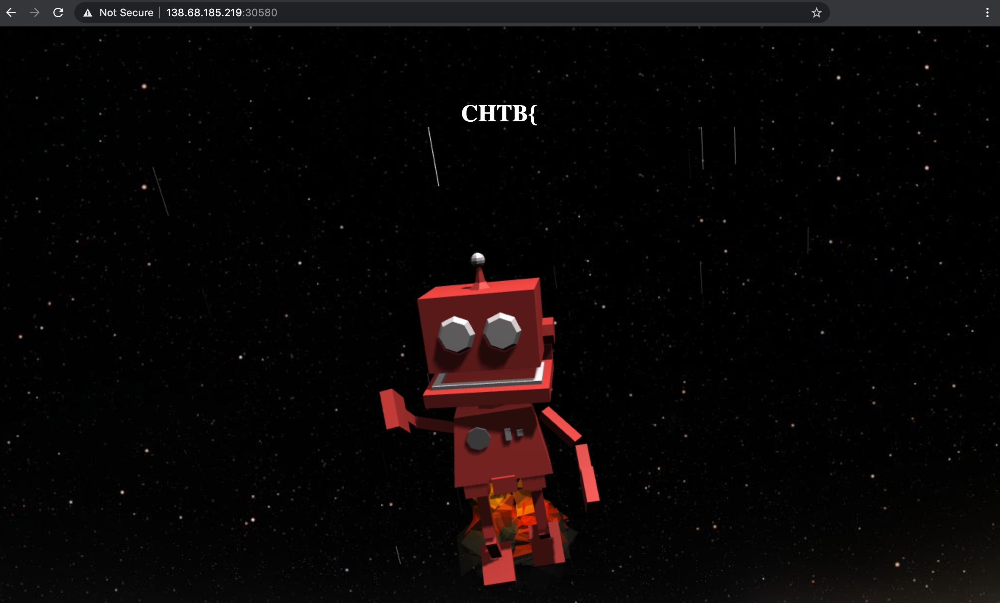
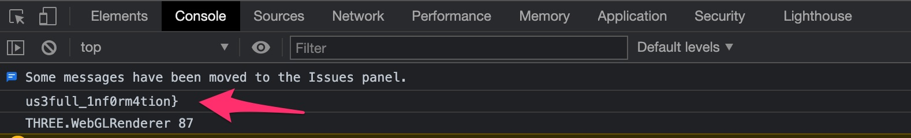

cyber apocalypse 2021 web challenge inspector gadget
Written: 2021/04/21
Challenge notes
Inspector Gadget was known for having a multitude of tools available for every occasion. Can you find them all?
This challenge required a Docker container to be started which lead me to this page:
The page is a fairly simple HTML page from what I can tell. Based on the challenge, it feels like we are trying to find clue's to the key, which has its start printed on the homepage as CHTB{. Looking at the source code, I immediately noticed this comment towards the bottom of the page:
<!--1nsp3ction_-->
</html>I suspected the 1nsp3ction_ comment was part of the key and was guiding me to the Inspect window, which I triggered by right clicking on the page and hitting Inspect. This pops open the development console window:
us3full_Inf0rm4tion} looks to be another clue, and the closed curly bracket makes me think this is the end of our key. The key still seemed to be missing something. I started to go through all the links to the files I found on the homepage to see if they would yield any further clues, after all, we were piecing the key together.
During this review, within the /static/js/main.js file, I found the message to our console window that we found earlier:
/* c4n_r3ve4l_ */Using the four different pieces I found, we can now build out our key: CHTB{1nsp3ction_c4n_r3ve4l_us3full_Inf0rm4tion}, suggesting that digging around and inspecting all the files lead us to the key.